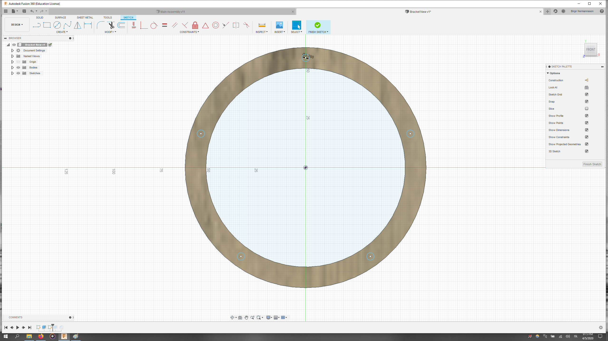
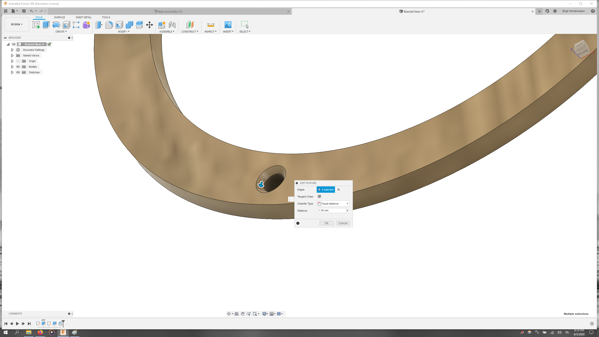
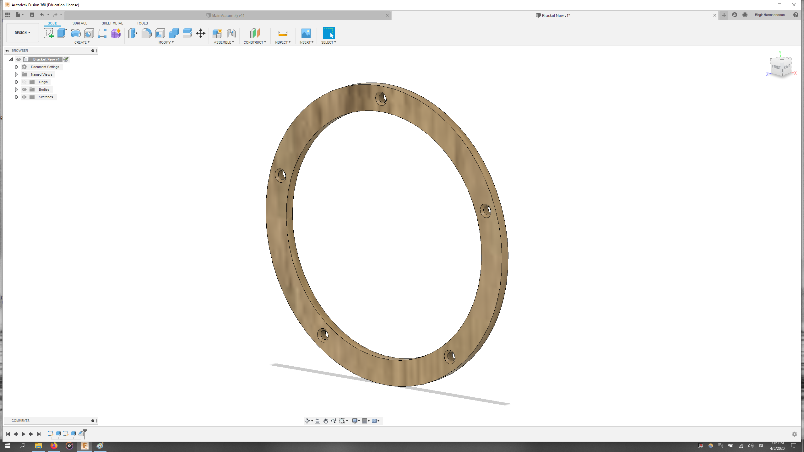
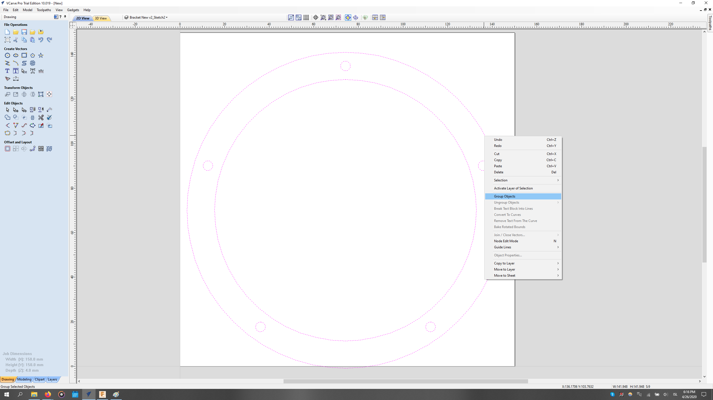

Making something big
Preparations
As usual, I began with watching a lecture on the subject at hand. The importand and interesting information given in the lecture in my opinion is listed here below.
1. The concept of machines making machines is always an interesting one.
2. The standing desk design that led to a startup company was pretty impressive.
3. I was unaware of the structural properties of MDF but it turns out it cracks under tension.
4. Machining carbon fiber is very hazardous and the residue is even defined as hazardous material.
5. Very helpful information was given on milling etiquette and drill choice.
6. "Happy machine sound" is a good indicator of a good milling.
7. The plunge depth of an end mill should be roughly equal to its diameter to hit the force/speed sweetspot.
8. Cut air until you're sure the mill settings are right.9. Dust collectors can ignite if the residue becomes hot enough so choosing the right settings is very important.
The 5" diameter bracket design for the final project (see more) will be the focus of this project.
Design
The bracket is fundamentally a hoop with some holes in it so this will be a very simple design. I began by drawing a sketch.

The sketch was then extruded 4 mm to create a body.

A wooden material was chosen for the body because it looks better.

To drill the bracket in place there have to be holes corresponding to the ones in the speaker driver itself. The circular pattern tool was used to obtain an even distribution of 5 holes around the bracket.
These holes were then extruded though the bracket, making the desired cuts.

As countersunk screws would be used to fasten both the bracket and speaker to the spiral housing, a chamfer was put on all the holes. The particular dimensions of these chamfers were only guesswork and would be fixed once the appropriate screws were selected later in the assembly phase of the final project.
The bracket model is now finished.
VCarve
As this project was done after Molding and Casting, I was already familiar with VCarve's layout and thought that this would be very straight forward. However, the nature of how this model would me milled required that I used vectors instead of just a 3D model. To start with I created a material with 150 x 150 x 4 mm dimensions.
Next I imported a .dxf file of the bracket model and grouped all of the vectors..
The bracket was both incorrectly placed and had the wrong dimensions so I centered the vectors and scaled them appropriately.
Choosing the 2D Profile Toolpath I began configuring all the settings when I realised that the outer and inner rings of the bracket required different settings for the circular leads.
The vectors were therefore ungrouped and activated.
All of the relevant settings for the milling (except feed speeds etc. - see Molding and Casting) can be seen on the following picture.
The result of the simulated toolpath looks like this.

Similarly the inner circular path was created.

Using the Drilling Toolpath the holes were then created.

Original Files
Here you can download the original design files for the bracket.